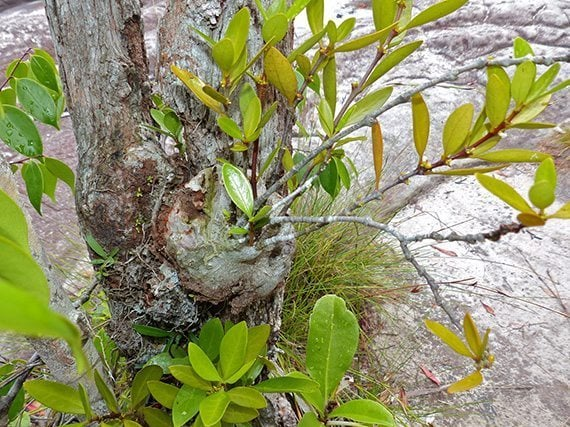
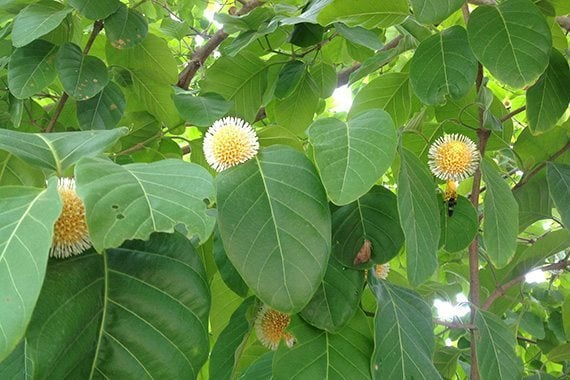

นายนันทศักดิ์ โชติชนะเดชาวงศ์ ผู้อำนวยการกองคุ้มครองภูมิปัญญาการแพทย์แผนไทยและพื้นบ้านไทย
กรมพัฒนาการแพทย์แผนไทยและการแพทย์ทางเลือก กระทรวงสาธารณสุข (สธ.) กล่าวว่า
ขณะนี้มีสมุนไพรไทย 22 ชนิด ที่เสี่ยงอาจจะสูญพันธุ์ได้ ประกอบด้วย
1
ถั่วดินโคก
2
เทพทาโร
3
มะตูมนิ่ม
4
มะหาด
5
เร่ว

6
หัวร้อยรู

7
กระทุ่มนา
\
8
ขันทองพยาบาท

9
จุกโรหินี
10
ชะเอมไทย

11
ชิงชี่
12
ตับเต่า
13
นางแย้มป่า
14
ปลาไหลเผือก

15
พังคี

16
มะคังแดง
17
สะค้าน

18
สารภีป่า

19
อบเชยไทย

20
เฉียงพร้านางแอ

21
เถาเอ็นอ่อน
22
เปราะหอม